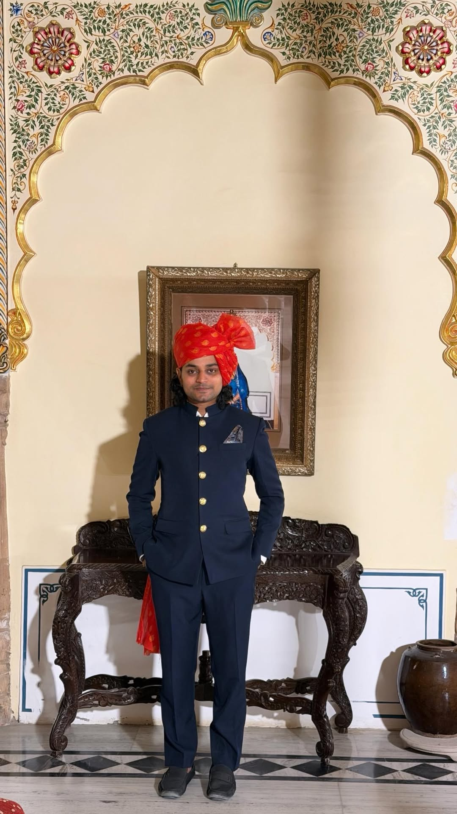
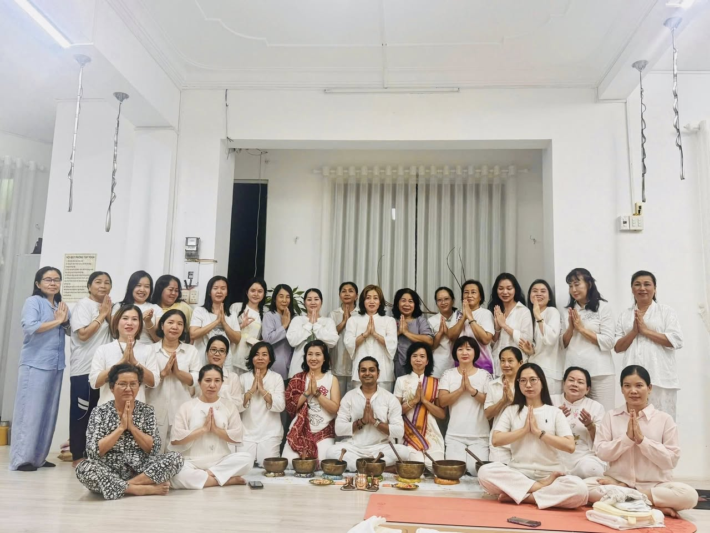
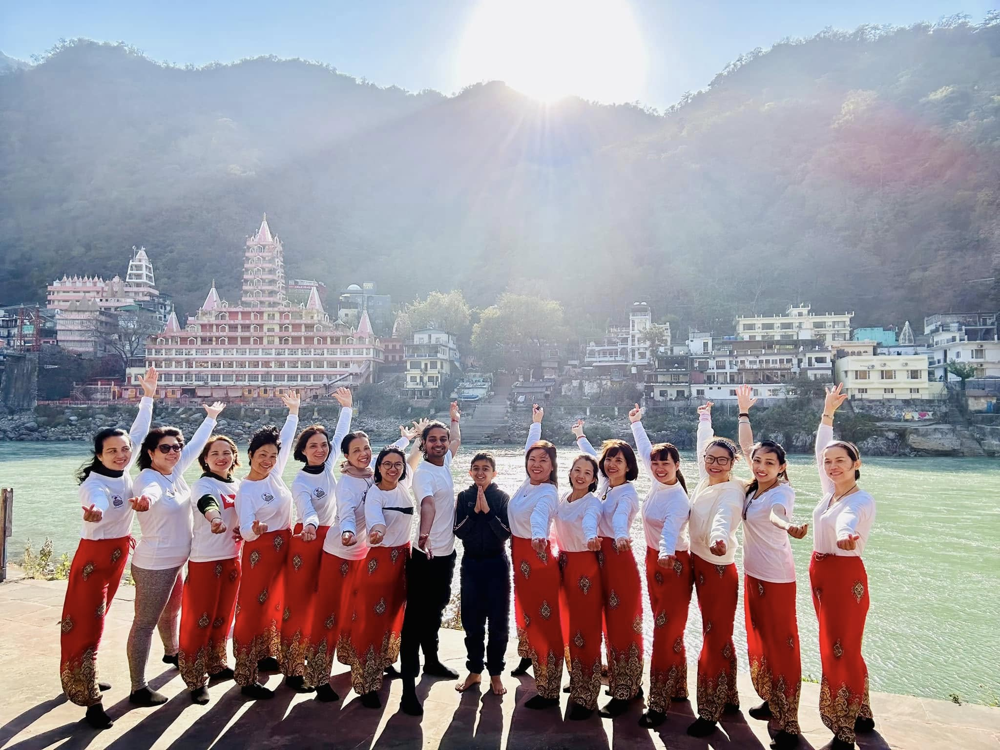

Ancient roots. Present practice. From India, for everyone — taught with heart, breath by breath.
Yoga chân truyền từ Ấn Độ — thực hành giữa thiên nhiên Việt Nam

Adi grew up surrounded by yoga — not as a fitness routine, but as a way of life woven into the rhythms of daily existence in India. From an early age, he learned from teachers who had received the tradition directly, lineage by lineage, breath by breath.
His journey led him to Vietnam, where he found a country whose warmth, natural beauty, and spiritual curiosity mirrored something deep in his own practice. Today, Adi teaches in Long Xuyên and Ho Chi Minh City — bringing the depth of classical Indian yoga to students who are truly ready to go beyond the poses.
"Yoga is not something you do. It is something you remember — a coming home to yourself."
Whether guiding a morning Hatha session, performing sound healing with ancient singing bowls, or leading a retreat along the Mekong River — Adi teaches with his whole soul, not just his body.
Whether you are stepping onto the mat for the first time or deepening a lifelong practice — there is a class here for you.
The classical foundation of all yoga. Slow, deliberate, deeply therapeutic — perfect for building strength, flexibility and inner stillness.
Movement synchronized with breath. Dynamic, energizing and meditative — each class feels like a moving meditation.
A structured, powerful sequence practiced in the same order every time. Builds discipline, heat, and transformation from the inside out.
Guided practices to quiet the mind, cultivate presence, and reconnect with what matters. Suitable for complete beginners.
Ancient breathing techniques that regulate energy, calm the nervous system and unlock deeper states of awareness. Often called the "yoga of breath."
Gentle, personalized yoga designed to heal the body and restore balance. Ideal for those recovering from injuries, stress, or burnout.
In the ancient Indian tradition of Nada Yoga, sound is not just something you hear — it is something you become. Adi uses Tibetan singing bowls and hand cymbals to create a field of healing vibration that reaches where words cannot.
Lie down, close your eyes, and let the sound carry you. Each session lasts 90 minutes and leaves participants in a state of deep rest — often described as the most peaceful experience of their lives.

Every event is an invitation to go deeper — held in Long Xuyên and across Vietnam.
International yoga teacher training — 200 hours with certification recognized by Yoga Alliance worldwide.
Master the foundations of classical yoga — alignment, sequencing, and the philosophy behind every pose.
Learn therapeutic applications — how to adapt yoga for injuries, chronic pain, and specific health conditions.
Deep dives into meditation and breathwork — the practices that transform yoga from exercise into a way of life.
How to sequence, instruct, and hold space for students at all levels — with warmth, skill, and cultural sensitivity.
Upon completion, graduates receive an internationally recognized RYS 200 certificate from Yoga Alliance — valid worldwide. Taught bilingually (English & Vietnamese) in a warm, hands-on environment.
Practice yoga where the river meets the sky — immersive retreat experiences in the most beautiful corners of Southern Vietnam.

Morning yoga beside the Mekong River, meditation under tropical canopies, and boat journeys through floating markets. An immersion in nature and stillness.
Yoga on the mountain, meditation in sacred silence, and Nada Yoga sound healing at golden hour. Adi's home base — where the practice runs deepest.
Cảm nhận từ học viên — những người đã thực hành cùng Adi.
I have tried many yoga classes in HCMC, but nothing compares to learning with Adi. He doesn't just teach poses — he teaches you how to breathe, how to feel, how to be present. It changed something in me.
Buổi chữa lành chuông xoay là trải nghiệm đẹp nhất tôi từng có. Nằm xuống, nhắm mắt, và để âm thanh ôm lấy mình. Tôi đã khóc mà không biết tại sao — đó là điều tuyệt vời nhất.
The Mekong retreat was a soul reset. Waking up at sunrise, practicing yoga by the river, no phone, no noise — just breath and nature. Adi holds the space with such warmth. I'll be back.
Have a question about classes, retreats, or YTT 200? Adi reads every message personally.
Or reach out directly via WhatsApp for a faster reply 📲